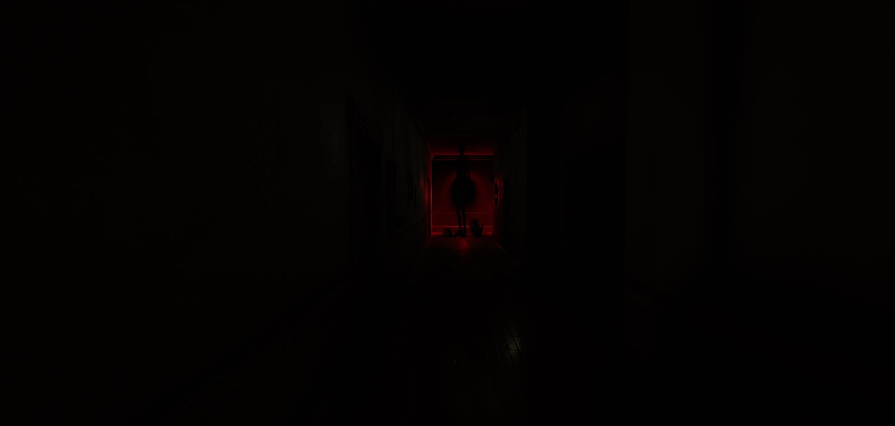

- The goal was tension, not threat. No monster and no chase, just light, sound and what you cannot quite make out.
- Lighting does the work. The frame above is one red source and a silhouette, and nothing in it is hostile.
- One building as a hard constraint. No streaming, no level transitions, and nothing spent on places the player walks past once, so every room could be authored properly.
- The house is the level and each room is a chapter, so moving through it is what advances the story.
- Early days work, from when I was still finding my feet in game development.